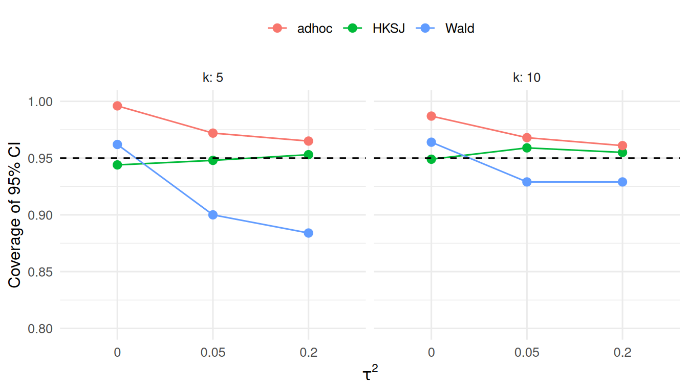
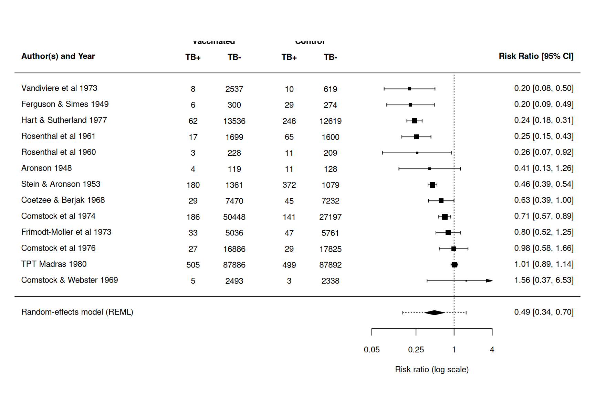
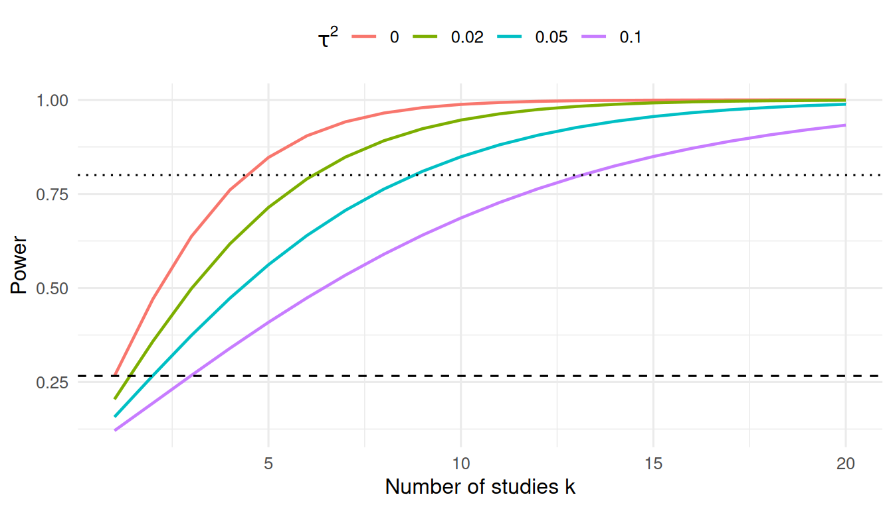

4 Common-Effect and Random-Effects Models
With effect sizes \(y_i\) and sampling variances \(v_i\) in hand (Chapter 3), the next step is to combine them. This chapter develops the two workhorse models of meta-analysis, the common-effect model and the random-effects model, together with a third model, the fixed-effects model, that gives the same numbers as the common-effect model but answers a different question. Most of the methodological disagreement in applied meta-analysis is not about how to compute a weighted average but about what that average estimates, how uncertain it is, and how much the true effects vary around it. Those three questions organize the chapter: estimands, heterogeneity, and inference.
The chapter then turns to the practical tools: estimators of the between-study variance \(\tau^2\) and how they compare, confidence intervals for \(\tau^2\), the Hartung-Knapp-Sidik-Jonkman (HKSJ) adjustment for inference on the mean, prediction intervals, forest plots, the same analysis in the meta package, the special methods for binary outcomes with rare events (Mantel-Haenszel, Peto, and generalized linear mixed models), the power of a meta-analysis, and random-effects models with non-normal distributions of true effects. Moderator analyses and subgroup comparisons, which try to explain heterogeneity rather than merely quantify it, are the subject of Chapter 5.
4.1 Inverse-variance weighting
Suppose \(k\) studies each estimate the same quantity \(\theta\) with independent, unbiased estimates \(y_i\) whose variances \(v_i\) are known. Among all weighted averages \(\sum_i w_i y_i / \sum_i w_i\), the one with the smallest variance uses weights proportional to the inverse variances, \(w_i = 1/v_i\):
\[ \hat\theta = \frac{\sum_{i=1}^k w_i y_i}{\sum_{i=1}^k w_i}, \qquad \operatorname{Var}(\hat\theta) = \frac{1}{\sum_{i=1}^k w_i}, \qquad w_i = \frac{1}{v_i}. \]
This is a standard result for combining independent estimates and the reason inverse-variance weighting underlies almost every meta-analytic model. Two features deserve emphasis. First, the variance of the pooled estimate is the reciprocal of the total weight: information adds up across studies. Second, the derivation treats the \(v_i\) as known constants. In practice they are estimates, and for some effect sizes (SMDs, log odds ratios) they depend on \(y_i\) itself, which introduces small biases in the weights. The models below inherit this assumption; it is usually harmless when studies are not very small.
Throughout the chapter we use the BCG vaccine trials (Colditz et al. 1994), with the log risk ratio of tuberculosis in vaccinated versus unvaccinated participants as the effect size. Negative values favour the vaccine.
dat <- escalc(measure = "RR", ai = tpos, bi = tneg, ci = cpos, di = cneg,
data = dat.bcg, slab = paste(author, year))
dat[, c("author", "year", "tpos", "tneg", "cpos", "cneg", "yi", "vi")]
#>
#> author year tpos tneg cpos cneg yi vi
#> 1 Aronson 1948 4 119 11 128 -0.8893 0.3256
#> 2 Ferguson & Simes 1949 6 300 29 274 -1.5854 0.1946
#> 3 Rosenthal et al 1960 3 228 11 209 -1.3481 0.4154
#> 4 Hart & Sutherland 1977 62 13536 248 12619 -1.4416 0.0200
#> 5 Frimodt-Moller et al 1973 33 5036 47 5761 -0.2175 0.0512
#> 6 Stein & Aronson 1953 180 1361 372 1079 -0.7861 0.0069
#> 7 Vandiviere et al 1973 8 2537 10 619 -1.6209 0.2230
#> 8 TPT Madras 1980 505 87886 499 87892 0.0120 0.0040
#> 9 Coetzee & Berjak 1968 29 7470 45 7232 -0.4694 0.0564
#> 10 Rosenthal et al 1961 17 1699 65 1600 -1.3713 0.0730
#> 11 Comstock et al 1974 186 50448 141 27197 -0.3394 0.0124
#> 12 Comstock & Webster 1969 5 2493 3 2338 0.4459 0.5325
#> 13 Comstock et al 1976 27 16886 29 17825 -0.0173 0.07144.2 Three models, three estimands
4.2.1 The common-effect model
The common-effect model (often called the “fixed-effect” model, in the singular, or the equal-effects model) assumes that every study estimates the same true effect:
\[ y_i = \theta + \varepsilon_i, \qquad \varepsilon_i \sim N(0, v_i). \]
Under this model all variation among the \(y_i\) is sampling error, the inverse-variance weighted average is the maximum likelihood estimate of \(\theta\), and its standard error is \(1/\sqrt{\sum w_i}\). The model is coherent when the studies are close replications: same intervention, same population, same outcome definition. In most applied fields that assumption is implausible on its face.
4.2.2 The fixed-effects model
There is a second reading of the same computation that does not require the true effects to be equal. Let each study have its own true effect \(\theta_i\), treated as fixed (not random) quantities:
\[ y_i = \theta_i + \varepsilon_i, \qquad \varepsilon_i \sim N(0, v_i). \]
The inverse-variance weighted average is then an unbiased estimate of the weighted average of the study-specific true effects,
\[ \bar\theta_w = \frac{\sum_i w_i \theta_i}{\sum_i w_i}, \]
and its standard error is again \(1/\sqrt{\sum w_i}\). Hedges and Vevea (1998) distinguished this conditional inference about the included studies from the unconditional inference of the random-effects model, and Rice et al. (2017) argued that it is a legitimate and useful analysis: it answers the question “what was the average effect in the studies we have, weighted by their precision?” without assuming homogeneity. The price is that inference is conditional on the included studies. The estimand is defined by these particular \(k\) studies and their particular weights; it says nothing directly about the effect in a new setting, and its value would change if a large study were added or removed. Because the numbers are identical, the distinction between the common-effect and the fixed-effects model lies entirely in the interpretation, and the reporting should make clear which is intended.
4.2.3 The random-effects model
The random-effects model treats the true effects as a random sample from a distribution of effects:
\[ y_i = \theta_i + \varepsilon_i, \qquad \theta_i = \mu + u_i, \qquad u_i \sim N(0, \tau^2), \qquad \varepsilon_i \sim N(0, v_i), \]
so that marginally \(y_i \sim N(\mu, v_i + \tau^2)\) (DerSimonian and Laird 1986; Hedges and Vevea 1998). There are now two parameters of interest: the mean \(\mu\) of the distribution of true effects and its standard deviation \(\tau\), the between-study heterogeneity. Given an estimate \(\hat\tau^2\), the mean is estimated with weights \(w_i^* = 1/(v_i + \hat\tau^2)\):
\[ \hat\mu = \frac{\sum_i w_i^* y_i}{\sum_i w_i^*}, \qquad \widehat{\operatorname{Var}}(\hat\mu) = \frac{1}{\sum_i w_i^*}. \]
Adding \(\tau^2\) to every study’s variance makes the weights more equal than under the common-effect model: large studies lose relative weight, small studies gain it. When \(\hat\tau^2 = 0\) the two models coincide.
The random-effects estimand \(\mu\) refers to a (usually hypothetical) population of studies or settings from which the included ones are regarded as a sample, and inference therefore generalizes beyond the included studies, to the extent that the sampling story is credible (Higgins et al. 2009). The normality of the \(u_i\) is a working assumption. It matters little for the estimate of \(\mu\), more for its confidence interval when \(k\) is small, and a great deal for prediction intervals.
ce <- rma(yi, vi, data = dat, method = "EE")
fe <- rma(yi, vi, data = dat, method = "FE")
re <- rma(yi, vi, data = dat, method = "REML")
ce
#>
#> Equal-Effects Model (k = 13)
#>
#> I^2 (total heterogeneity / total variability): 92.12%
#> H^2 (total variability / sampling variability): 12.69
#>
#> Test for Heterogeneity:
#> Q(df = 12) = 152.2330, p-val < .0001
#>
#> Model Results:
#>
#> estimate se zval pval ci.lb ci.ub
#> -0.4303 0.0405 -10.6247 <.0001 -0.5097 -0.3509 ***
#>
#> ---
#> Signif. codes: 0 '***' 0.001 '**' 0.01 '*' 0.05 '.' 0.1 ' ' 1
re
#>
#> Random-Effects Model (k = 13; tau^2 estimator: REML)
#>
#> tau^2 (estimated amount of total heterogeneity): 0.3132 (SE = 0.1664)
#> tau (square root of estimated tau^2 value): 0.5597
#> I^2 (total heterogeneity / total variability): 92.22%
#> H^2 (total variability / sampling variability): 12.86
#>
#> Test for Heterogeneity:
#> Q(df = 12) = 152.2330, p-val < .0001
#>
#> Model Results:
#>
#> estimate se zval pval ci.lb ci.ub
#> -0.7145 0.1798 -3.9744 <.0001 -1.0669 -0.3622 ***
#>
#> ---
#> Signif. codes: 0 '***' 0.001 '**' 0.01 '*' 0.05 '.' 0.1 ' ' 1
rbind(EE = c(coef(ce), se = ce$se), FE = c(coef(fe), se = fe$se),
RE = c(coef(re), se = re$se))
#> intrcpt se
#> EE -0.4303 0.0405
#> FE -0.4303 0.0405
#> RE -0.7145 0.1798metafor labels the first model “Equal-Effects” (method = "EE") and the second “Fixed-Effects” (method = "FE"), and as expected they give identical results: \(\hat\theta = -0.430\) with standard error 0.041, a pooled risk ratio of \(\exp(-0.430) = 0.65\). The random-effects estimate is \(\hat\mu = -0.715\) (SE 0.180), a risk ratio of 0.49. The difference is not a technicality. The common-effect analysis is dominated by the two most precise trials (Stein & Aronson 1953 and the TPT Madras trial, which together carry about 65% of the common-effect weight), and the Madras trial found no benefit at all. The random-effects weights are much more even, and the estimate moves toward the larger benefits seen in the smaller trials. The standard error is more than four times larger, because \(\hat\tau^2 = 0.313\) is large relative to most within-study variances.
4.2.4 Which model?
The choice between models should be driven by the inferential goal and by what is known about the studies, not by a test for heterogeneity. If the aim is to make a statement about an intervention’s effect across the range of settings represented by (and similar to) the studies, the random-effects model is the natural choice, and in most reviews in psychology, medicine, economics and management, where studies differ in populations, implementations and measures, it is the default (Borenstein et al. 2021; Higgins et al. 2019). A common-effect analysis is appropriate for genuine replications (for example, multi-site trials run under one protocol). The fixed-effects interpretation is appropriate when the question is explicitly about the included studies, for example when summarizing a closed set of trials submitted for a regulatory decision (Rice et al. 2017).
Two practical arguments cut in the other direction. With very few studies \(\tau^2\) is estimated so imprecisely that random-effects inference can be unstable (Section 4.10). And because the random-effects model upweights small studies, it is more sensitive to small-study effects such as publication bias (Chapter 7); a large difference between common-effect and random-effects estimates, as in the BCG data, is itself a signal worth investigating.
4.3 Quantifying heterogeneity
4.3.1 Cochran’s Q
The classical test of homogeneity uses Cochran’s \(Q\) statistic (Cochran 1954), the weighted sum of squared deviations from the common-effect estimate,
\[ Q = \sum_{i=1}^k w_i (y_i - \hat\theta)^2, \qquad w_i = 1/v_i. \]
Under the null hypothesis \(\tau^2 = 0\), \(Q\) follows approximately a \(\chi^2\) distribution with \(k - 1\) degrees of freedom. For the BCG trials \(Q = 152.2\) on 12 degrees of freedom (\(p < .0001\)). The test has low power when \(k\) is small and high power when studies are large, so a non-significant \(Q\) is weak evidence of homogeneity and a significant \(Q\) says nothing about whether the heterogeneity matters. The test is best viewed as a building block for the statistics below rather than as a decision rule for model selection.
4.3.2 tau, I-squared and H-squared
Three descriptive measures are reported by every meta-analysis program.
The between-study variance \(\tau^2\), and its square root \(\tau\), describe heterogeneity on the scale of the effect size. They are the only one of the three that is an absolute measure: \(\tau = 0.56\) on the log risk ratio scale means that the true risk ratios across settings have a standard deviation of 0.56 log units, so that roughly 95% of them lie within a factor of \(\exp(1.96 \times 0.56) \approx 3\) of the mean.
\(H^2\) and \(I^2\) (Higgins and Thompson 2002) are relative measures. In their original form, based on \(Q\),
\[ H^2 = \frac{Q}{k - 1}, \qquad I^2 = \frac{Q - (k - 1)}{Q} \times 100\%, \]
with \(I^2\) truncated at zero. \(I^2\) estimates the proportion of the total variability in the observed effects that is due to between-study heterogeneity rather than sampling error. Equivalently, with the “typical” within-study variance
\[ \tilde v = \frac{(k - 1) \sum_i w_i}{\left(\sum_i w_i\right)^2 - \sum_i w_i^2}, \]
one can write \(I^2 = \hat\tau^2 / (\hat\tau^2 + \tilde v)\) and \(H^2 = (\hat\tau^2 + \tilde v)/\tilde v\); these model-based versions are what metafor reports, and they coincide with the \(Q\)-based formulas when \(\tau^2\) is estimated by the DerSimonian-Laird method. Rough benchmarks of 25%, 50% and 75% for low, moderate and high heterogeneity were suggested by Higgins et al. (2003).
w <- 1 / dat$vi
k <- nrow(dat)
theta_ce <- sum(w * dat$yi) / sum(w)
Q <- sum(w * (dat$yi - theta_ce)^2)
C <- sum(w) - sum(w^2) / sum(w)
tau2_DL <- max(0, (Q - (k - 1)) / C)
v_typ <- (k - 1) * sum(w) / (sum(w)^2 - sum(w^2))
c(Q = Q, df = k - 1, H2 = Q / (k - 1), I2 = 100 * (Q - (k - 1)) / Q,
tau2_DL = tau2_DL, typical_v = v_typ)
#> Q df H2 I2 tau2_DL typical_v
#> 152.23301 12.00000 12.68608 92.11735 0.30876 0.026424.3.3 Why I-squared is not an absolute measure of heterogeneity
Because \(I^2 = \tau^2/(\tau^2 + \tilde v)\), it depends on the within-study variances as much as on \(\tau^2\). The same dispersion of true effects produces a small \(I^2\) in a meta-analysis of small studies and a large \(I^2\) in a meta-analysis of large studies. \(I^2\) therefore cannot tell a reader how much the effects vary: Borenstein et al. (2017) show that a meta-analysis with \(I^2 = 50\%\) is compatible with true effects that span a narrow and substantively unimportant range or a wide and clinically decisive one, and recommend reporting the predicted range of true effects (the prediction interval of Section 4.6) instead of relying on \(I^2\) for that purpose.
The point is easy to demonstrate: holding \(\hat\tau^2\) fixed at its BCG value and making every study ten times larger (dividing each \(v_i\) by 10), \(I^2\) rises toward 100% although the distribution of true effects is unchanged.
i2_for <- function(vi, tau2) {
w <- 1 / vi
v_typ <- (length(vi) - 1) * sum(w) / (sum(w)^2 - sum(w^2))
100 * tau2 / (tau2 + v_typ)
}
sapply(c(original = 1, ten_times_larger = 10, ten_times_smaller = 0.1),
function(f) i2_for(dat$vi / f, tau2 = re$tau2))
#> original ten_times_larger ten_times_smaller
#> 92.22 99.16 54.25With the actual study sizes \(I^2 = 92\%\); with studies ten times smaller it would be 54%, with the same \(\tau = 0.56\). Report \(\tau\) (with a confidence interval) and the prediction interval as the primary descriptions of heterogeneity, and \(I^2\) as a secondary, relative one.
4.4 Estimating the between-study variance
4.4.1 The estimators
Many estimators of \(\tau^2\) have been proposed. They fall into three families (Veroniki et al. 2015).
Method-of-moments estimators equate a weighted sum of squares to its expected value and solve for \(\tau^2\), truncating negative solutions at zero. The DerSimonian-Laird estimator (DerSimonian and Laird 1986) uses the inverse-variance weighted \(Q\),
\[ \hat\tau^2_{\text{DL}} = \max\!\left(0, \frac{Q - (k - 1)}{\sum_i w_i - \sum_i w_i^2 / \sum_i w_i}\right). \]
The Hedges (HE) estimator is the unweighted analogue, \(\hat\tau^2_{\text{HE}} = \max\{0, \sum_i (y_i - \bar y)^2/(k - 1) - \sum_i v_i / k\}\). The generalized \(Q\) (GENQ) estimator of DerSimonian and Kacker (2007) allows arbitrary weights \(a_i\) and contains DL (\(a_i = 1/v_i\)) and HE (\(a_i = 1\)) as special cases. The Hunter-Schmidt (HS) estimator, \(\max\{0, (Q - k)/\sum_i w_i\}\), comes from the psychometric tradition (Chapter 3); compared with DL it subtracts \(k\) rather than \(k - 1\) (ignoring the degree of freedom used to estimate the mean) and divides by the larger \(\sum_i w_i\), so it is negatively biased (Viechtbauer 2005).
The Paule-Mandel (PM) estimator (Paule and Mandel 1982) iterates instead: it finds the value of \(\tau^2\) for which the generalized \(Q\) statistic computed with random-effects weights equals its expected value,
\[ \sum_{i=1}^k \frac{(y_i - \hat\mu(\tau^2))^2}{v_i + \tau^2} = k - 1. \]
The empirical Bayes (EB) estimator of Morris (1983) turns out to be identical to PM, as the metafor documentation notes. The median-unbiased variant (PMM) sets the same statistic equal to the median rather than the mean of the \(\chi^2_{k-1}\) distribution, which reduces the tendency of PM to return zero in small meta-analyses. The Sidik-Jonkman (SJ) estimator (Sidik and Jonkman 2005) starts from a crude initial value and re-estimates \(\tau^2\) once from weighted residuals; it never returns exactly zero and tends to overestimate \(\tau^2\) when heterogeneity is small.
Likelihood-based estimators maximize the marginal likelihood implied by \(y_i \sim N(\mu, v_i + \tau^2)\). Maximum likelihood (ML) is negatively biased because it ignores the degree of freedom used to estimate \(\mu\); restricted maximum likelihood (REML) corrects this and is approximately unbiased, with good efficiency (Viechtbauer 2005).
Bayesian estimators place a prior on \(\tau\) and are discussed in Chapter 9.
4.4.2 Comparing the estimators on the BCG data
rma() fits all of these through the method argument. GENQ needs user-supplied weights; here we use the total sample size of each trial.
methods_tau2 <- c("DL", "HE", "HS", "SJ", "ML", "REML", "EB", "PM", "PMM", "GENQ")
fits <- lapply(methods_tau2, function(m) {
if (m == "GENQ") {
rma(yi, vi, data = dat, method = m, weights = tpos + tneg + cpos + cneg)
} else {
rma(yi, vi, data = dat, method = m)
}
})
tab <- t(sapply(fits, function(f)
c(tau2 = f$tau2, tau = sqrt(f$tau2), I2 = f$I2, mu = coef(f)[[1]],
se = f$se, ci.lb = f$ci.lb, ci.ub = f$ci.ub, RR = exp(coef(f)[[1]]))))
rownames(tab) <- methods_tau2
round(tab, 3)
#> tau2 tau I2 mu se ci.lb ci.ub RR
#> DL 0.309 0.556 92.12 -0.714 0.179 -1.064 -0.364 0.490
#> HE 0.329 0.573 92.56 -0.716 0.183 -1.075 -0.357 0.489
#> HS 0.228 0.478 89.63 -0.705 0.159 -1.015 -0.394 0.494
#> SJ 0.346 0.588 92.90 -0.717 0.187 -1.084 -0.351 0.488
#> ML 0.280 0.529 91.38 -0.711 0.172 -1.048 -0.374 0.491
#> REML 0.313 0.560 92.22 -0.715 0.180 -1.067 -0.362 0.489
#> EB 0.318 0.564 92.33 -0.715 0.181 -1.070 -0.360 0.489
#> PM 0.318 0.564 92.33 -0.715 0.181 -1.070 -0.360 0.489
#> PMM 0.343 0.586 92.86 -0.717 0.187 -1.083 -0.351 0.488
#> GENQ 0.239 0.489 90.05 -0.236 0.277 -0.779 0.308 0.790Across the nine estimators that use inverse-variance-type weights, \(\hat\tau^2\) ranges from 0.228 (HS) to 0.346 (SJ), with REML at 0.313, DL at 0.309 and PM/EB at 0.318. As expected, HS and ML are at the low end. Yet the pooled log risk ratio barely moves, from \(-0.705\) to \(-0.717\), and its standard error from 0.159 to 0.187: with 13 studies and this much heterogeneity, the choice of estimator matters more for the description of heterogeneity than for the mean. The GENQ row is a warning about a different issue. With sample-size weights, rma() uses the same weights to estimate \(\mu\), so the TPT Madras trial (about 177,000 participants and a null result) dominates and the pooled risk ratio becomes \(\exp(-0.236) = 0.79\). User-supplied weights change the estimand, not just the variance estimate.
The generalized \(Q\) family also yields the two-step estimators of DerSimonian and Kacker (2007). The DerSimonian-Laird estimate uses common-effect weights \(1/v_i\), which are optimal only when \(\tau^2 = 0\). A second step recomputes the moment estimator with the weights \(a_i = 1/(v_i + \hat\tau^2_{\text{DL}})\) implied by the first step (the two-step DL estimator, sometimes written DL2); the same idea applied to HE gives a two-step HE estimator. Iterating the step to convergence gives the Paule-Mandel estimator, which is why DerSimonian and Kacker describe PM as the optimal member of the family and the two-step estimators as approximations to it. In rma() a two-step estimate is obtained with method = "GENQ" and the second-step weights; because those weights would also be used for \(\hat\mu\), the mean is then re-estimated with the usual random-effects weights by fixing tau2.
dl <- rma(yi, vi, data = dat, method = "DL")
dl2 <- rma(yi, vi, data = dat, method = "GENQ", weights = 1 / (vi + dl$tau2))
he <- rma(yi, vi, data = dat, method = "HE")
he2 <- rma(yi, vi, data = dat, method = "GENQ", weights = 1 / (vi + he$tau2))
t2_iter <- dl$tau2
for (step in 1:25) { # iterate the two-step update
t2_iter <- rma(yi, vi, data = dat, method = "GENQ",
weights = 1 / (vi + t2_iter))$tau2
}
c(DL = dl$tau2, DL2 = dl2$tau2, HE = he$tau2, HE2 = he2$tau2,
iterated = t2_iter, PM = rma(yi, vi, data = dat, method = "PM")$tau2)
#> DL DL2 HE HE2 iterated PM
#> 0.3088 0.3180 0.3286 0.3182 0.3181 0.3181
coef(rma(yi, vi, data = dat, tau2 = dl2$tau2)) # mean with DL2 plugged in
#> intrcpt
#> -0.715A single extra step moves the DL estimate from 0.309 to 0.318, essentially the Paule-Mandel value of 0.318 reached by iteration. Starting from the HE estimate of 0.329, which errs in the other direction, one step lands in the same place (0.318). The two-step estimators matter mainly as a cheap improvement on DL in software that offers nothing better; where PM or REML is available they have little to add.
4.4.3 Recommendations
Veroniki et al. (2015) reviewed the estimators and recommended the Paule-Mandel estimator for both dichotomous and continuous outcomes, with REML as an alternative for continuous outcomes. In a large simulation study, Langan et al. (2018) recommended REML over the other estimators, noted that with the small numbers of studies typical in health research no estimator gives a reliable gauge of heterogeneity, and found that HKSJ confidence intervals for the mean were much less sensitive to the choice of \(\tau^2\) estimator than Wald intervals. The DerSimonian-Laird estimator, long the default in many programs, is negatively biased when heterogeneity is substantial and is no longer recommended as a default. REML (the default in metafor and meta) or PM are sensible defaults; reporting a sensitivity analysis with a second estimator is good practice when the conclusions hinge on \(\tau^2\).
4.4.4 Confidence intervals for tau-squared
A point estimate of \(\tau^2\) from a handful of studies is very imprecise, and it should always be reported with a confidence interval. The Q-profile method (Viechtbauer 2006) inverts the generalized \(Q\) statistic: the interval contains all values \(\tau^2\) for which
\[ \chi^2_{k-1,\, 0.025} \le \sum_{i=1}^k \frac{(y_i - \hat\mu(\tau^2))^2}{v_i + \tau^2} \le \chi^2_{k-1,\, 0.975}. \]
Because the statistic, evaluated at the true \(\tau^2\), follows a \(\chi^2_{k-1}\) distribution exactly when the effects are normal and the \(v_i\) are known (estimating \(\mu\) costs the one degree of freedom), the interval is exact under the model assumptions. It is the default of confint() for rma objects. Intervals for \(\tau\), \(I^2\) and \(H^2\) follow by transformation.
confint(re)
#>
#> estimate ci.lb ci.ub
#> tau^2 0.3132 0.1197 1.1115
#> tau 0.5597 0.3460 1.0543
#> I^2(%) 92.2214 81.9177 97.6781
#> H^2 12.8558 5.5303 43.0680The 95% CI for \(\tau^2\) runs from 0.120 to 1.112, so \(\tau\) is somewhere between 0.35 and 1.05: the heterogeneity is certainly substantial, but its size is uncertain by a factor of three. The interval for \(I^2\) (82% to 98%) is correspondingly wide. Note that the Q-profile interval does not depend on which point estimator was used; confint() on a DL fit returns the same limits.
4.4.5 Other intervals for tau-squared
The Q-profile interval is one member of a larger family. Cochran’s \(Q\) itself, computed with the common-effect weights \(1/v_i\), does not follow a \(\chi^2_{k-1}\) distribution when \(\tau^2 > 0\), but its exact distribution under the random-effects model is a weighted sum of \(\chi^2_1\) variables whose weights depend on \(\tau^2\) (Biggerstaff and Jackson 2008). Inverting that distribution gives an exact confidence interval for \(\tau^2\) centred, in effect, on the DerSimonian-Laird estimate, the Biggerstaff-Jackson interval. Jackson (2013) generalized the construction to a \(Q\) statistic with arbitrary fixed weights \(a_i\); the Q-profile method corresponds instead to weights that change with \(\tau^2\). All these intervals are exact under the normal random-effects model with known \(v_i\), so they differ in efficiency, not in validity. Jackson’s pragmatic recommendation, when some but an unknown amount of heterogeneity is expected, is to use weights equal to the reciprocals of the within-study standard errors, \(a_i = 1/\sqrt{v_i}\), a compromise between the common-effect weights (\(1/v_i\), efficient when \(\tau^2\) is small) and equal weights (efficient when \(\tau^2\) is large).
A different route is the profile likelihood (HARDY and THOMPSON 1996): the interval contains all values of \(\tau^2\) whose (restricted) log-likelihood, maximized over \(\mu\), lies within \(\chi^2_{1,0.95}/2 = 1.92\) units of the maximum. It is not exact in small samples, because it relies on asymptotic likelihood theory, but it uses the same likelihood as the ML and REML point estimates and extends naturally to meta-regression and multilevel models (Section 6.3.5 uses profile likelihoods to check the variance components of multilevel models).
In metafor, confint(type = "PL") gives the profile likelihood interval for an ML or REML fit, and type = "GENQ" gives the generalized \(Q\) interval for a model fitted with method = "GENQ" and the chosen weights (computing the exact distribution needs the CompQuadForm package). The function below collects five intervals for the BCG trials and for the six homogeneous-looking warfarin trials analyzed in Section 4.5.3.
tau2_intervals <- function(d) {
f_reml <- rma(yi, vi, data = d, method = "REML")
f_ml <- rma(yi, vi, data = d, method = "ML")
f_bj <- rma(yi, vi, data = d, method = "GENQ", weights = 1 / vi)
f_j <- rma(yi, vi, data = d, method = "GENQ", weights = 1 / sqrt(vi))
rbind("Q-profile (REML estimate)" = confint(f_reml)$random["tau^2", ],
"Generalized Q, a = 1/v (BJ)" = confint(f_bj, type = "GENQ")$random["tau^2", ],
"Generalized Q, a = 1/sqrt(v)" = confint(f_j, type = "GENQ")$random["tau^2", ],
"Profile likelihood (REML)" = confint(f_reml, type = "PL")$random["tau^2", ],
"Profile likelihood (ML)" = confint(f_ml, type = "PL")$random["tau^2", ])
}
ci_bcg <- tau2_intervals(dat)
round(ci_bcg, 3)
#> estimate ci.lb ci.ub
#> Q-profile (REML estimate) 0.313 0.120 1.111
#> Generalized Q, a = 1/v (BJ) 0.309 0.101 1.636
#> Generalized Q, a = 1/sqrt(v) 0.315 0.122 1.140
#> Profile likelihood (REML) 0.313 0.115 0.965
#> Profile likelihood (ML) 0.280 0.105 0.834
ci_hart <- tau2_intervals(escalc(measure = "IRR", x1i = x1i, t1i = t1i, x2i = x2i,
t2i = t2i, data = dat.hart1999))
round(ci_hart, 3)
#> estimate ci.lb ci.ub
#> Q-profile (REML estimate) 0 0 0.680
#> Generalized Q, a = 1/v (BJ) 0 0 0.476
#> Generalized Q, a = 1/sqrt(v) 0 0 0.592
#> Profile likelihood (REML) 0 0 0.387
#> Profile likelihood (ML) 0 0 0.252For the BCG trials all five intervals agree that heterogeneity is substantial; they disagree about how large it might be. The lower limits are close (0.10 to 0.12), but the upper limits range from 0.83 for the ML profile likelihood to 1.64 for the Biggerstaff-Jackson interval, which inherits the inefficiency of common-effect weights when heterogeneity is large. The interval with \(a_i = 1/\sqrt{v_i}\) is close to the Q-profile interval. For the warfarin trials every interval starts at zero, and the upper limits, from 0.25 to 0.68, show that six trials cannot rule out heterogeneity on the log rate ratio scale that would matter clinically. The profile likelihood intervals are the narrowest in both examples, which is a reason for caution rather than a virtue: their coverage rests on large-sample theory, and in the simulations of Viechtbauer (2006) the Q-profile method gave the most accurate coverage. The Q-profile interval therefore remains a good default; reporting a second interval is a cheap check when conclusions depend on how large \(\tau^2\) could be.
4.5 Inference on the mean effect
4.5.1 Wald-type intervals
The standard random-effects confidence interval is \(\hat\mu \pm z_{0.975} / \sqrt{\sum w_i^*}\). It treats \(\hat\tau^2\) as if it were the true \(\tau^2\) and uses the normal distribution, ignoring the uncertainty in \(\hat\tau^2\). When \(k\) is small, \(\hat\tau^2\) is very uncertain, and the Wald interval is too narrow: simulation studies consistently show coverage well below the nominal 95% when there are few studies and moderate or large heterogeneity (IntHout et al. 2014).
4.5.2 The Hartung-Knapp-Sidik-Jonkman method
Hartung and Knapp (2001) and Sidik and Jonkman (2002) independently proposed a simple correction. The variance of \(\hat\mu\) is re-estimated from the weighted residuals,
\[ \widehat{\operatorname{Var}}_{\text{HK}}(\hat\mu) = \frac{q}{\sum_i w_i^*}, \qquad q = \frac{1}{k - 1} \sum_{i=1}^k w_i^* (y_i - \hat\mu)^2, \]
and the interval uses the \(t\) distribution with \(k - 1\) degrees of freedom, \(\hat\mu \pm t_{k-1,\, 0.975} \sqrt{q / \sum_i w_i^*}\). The scaling factor \(q\) captures how much the residuals actually scatter relative to what the model assumes; the \(t\) quantile reflects that this scatter is itself estimated from \(k\) observations. In metafor the method is requested with test = "knha" (the same adjustment applies to meta-regression models; Knapp and Hartung (2003)), and in meta with method.random.ci = "HK". IntHout et al. (2014) showed in simulations that HKSJ intervals keep close to nominal coverage in situations where DerSimonian-Laird Wald intervals fail badly, and Langan et al. (2018) found the same across estimators.
re_hk <- rma(yi, vi, data = dat, method = "REML", test = "knha")
re_hk
#>
#> Random-Effects Model (k = 13; tau^2 estimator: REML)
#>
#> tau^2 (estimated amount of total heterogeneity): 0.3132 (SE = 0.1664)
#> tau (square root of estimated tau^2 value): 0.5597
#> I^2 (total heterogeneity / total variability): 92.22%
#> H^2 (total variability / sampling variability): 12.86
#>
#> Test for Heterogeneity:
#> Q(df = 12) = 152.2330, p-val < .0001
#>
#> Model Results:
#>
#> estimate se tval df pval ci.lb ci.ub
#> -0.7145 0.1808 -3.9522 12 0.0019 -1.1084 -0.3206 **
#>
#> ---
#> Signif. codes: 0 '***' 0.001 '**' 0.01 '*' 0.05 '.' 0.1 ' ' 1For the BCG data, \(q\) is close to 1, so the HKSJ standard error (0.181) is almost the Wald one (0.180), and the widening of the interval, from \((-1.067, -0.362)\) to \((-1.108, -0.321)\), comes mainly from the \(t_{12}\) quantile.
4.5.3 The ad hoc variance correction
HKSJ has one known weakness. When the observed effects are more homogeneous than the model expects, \(q < 1\) and the HKSJ standard error is smaller than the Wald one; with moderate \(k\) the \(t\) quantile may not compensate, and the HKSJ interval can then be narrower than the DerSimonian-Laird interval (Jackson et al. 2017). An ad hoc modification replaces \(q\) by \(\max(1, q)\), so that the adjustment can only widen the interval (Röver et al. 2015; Jackson et al. 2017). metafor 4.8 implements this as test = "adhoc", and meta as adhoc.hakn.ci = "se".
The six warfarin trials of Chapter 3 are a case with \(q < 1\): they are more similar than sampling error alone would predict.
irr <- escalc(measure = "IRR", x1i = x1i, t1i = t1i, x2i = x2i, t2i = t2i,
data = dat.hart1999, slab = study)
cmp <- sapply(c(Wald = "z", HKSJ = "knha", adhoc = "adhoc"), function(tt) {
f <- rma(yi, vi, data = irr, method = "REML", test = tt)
c(Q = f$QE, tau2 = f$tau2, est = coef(f)[[1]], se = f$se,
ci.lb = f$ci.lb, ci.ub = f$ci.ub)
})
round(cmp, 4)
#> Wald HKSJ adhoc
#> Q 2.9625 2.9625 2.9625
#> tau2 0.0000 0.0000 0.0000
#> est -1.0168 -1.0168 -1.0168
#> se 0.1635 0.1258 0.1635
#> ci.lb -1.3372 -1.3402 -1.4370
#> ci.ub -0.6964 -0.6934 -0.5966Here \(Q = 2.96\) on 5 degrees of freedom and \(\hat\tau^2 = 0\). The HKSJ standard error (0.126) is smaller than the Wald one (0.163), and the HKSJ interval ends up almost identical to the Wald interval; the ad hoc version keeps the Wald standard error and combines it with the \(t_5\) quantile, giving a noticeably wider interval. Which is “right” cannot be settled from one dataset; the ad hoc version is the conservative choice when \(k\) is small and the studies look suspiciously homogeneous.
4.5.4 A small simulation
To see why the HKSJ adjustment has become the recommended default, we simulate meta-analyses with \(k = 5\) or \(k = 10\) studies of SMD-like effects (\(v_i \approx 4/n_i\) with total sample sizes between 20 and 200) and true heterogeneity \(\tau^2 \in \{0, 0.05, 0.2\}\), and record how often each 95% interval contains the true mean \(\mu = 0.3\). To keep the simulation fast, the DerSimonian-Laird estimator and the three intervals are computed directly from the formulas above; the first lines check them against rma() on the BCG data.
ci_dl <- function(yi, vi, level = 0.95) {
k <- length(yi); w <- 1 / vi
Q <- sum(w * (yi - sum(w * yi) / sum(w))^2)
tau2 <- max(0, (Q - (k - 1)) / (sum(w) - sum(w^2) / sum(w)))
ws <- 1 / (vi + tau2)
mu <- sum(ws * yi) / sum(ws)
q <- sum(ws * (yi - mu)^2) / (k - 1)
se_w <- sqrt(1 / sum(ws))
se_h <- sqrt(q / sum(ws))
se_a <- sqrt(max(1, q) / sum(ws))
zc <- qnorm(1 - (1 - level) / 2); tc <- qt(1 - (1 - level) / 2, k - 1)
c(wald_lb = mu - zc * se_w, wald_ub = mu + zc * se_w,
hksj_lb = mu - tc * se_h, hksj_ub = mu + tc * se_h,
adhoc_lb = mu - tc * se_a, adhoc_ub = mu + tc * se_a)
}
chk <- ci_dl(dat$yi, dat$vi)
rbind(by_hand = chk[c("wald_lb", "wald_ub", "hksj_lb", "hksj_ub")],
rma = c(unlist(rma(yi, vi, data = dat, method = "DL")[c("ci.lb", "ci.ub")]),
unlist(rma(yi, vi, data = dat, method = "DL", test = "knha")[c("ci.lb", "ci.ub")])))
#> wald_lb wald_ub hksj_lb hksj_ub
#> by_hand -1.064 -0.3638 -1.108 -0.3204
#> rma -1.064 -0.3638 -1.108 -0.3204
set.seed(4)
sim_coverage <- function(k, tau2, nrep = 1000, mu = 0.3) {
hits <- replicate(nrep, {
ni <- sample(20:200, k, replace = TRUE)
vi <- 4 / ni
yi <- rnorm(k, mu, sqrt(tau2 + vi))
ci <- ci_dl(yi, vi)
c(Wald = ci[["wald_lb"]] <= mu & mu <= ci[["wald_ub"]],
HKSJ = ci[["hksj_lb"]] <= mu & mu <= ci[["hksj_ub"]],
adhoc = ci[["adhoc_lb"]] <= mu & mu <= ci[["adhoc_ub"]])
})
rowMeans(hits)
}
grid <- expand.grid(k = c(5, 10), tau2 = c(0, 0.05, 0.2))
cov_res <- cbind(grid, t(mapply(sim_coverage, grid$k, grid$tau2)))
cov_res
#> k tau2 Wald HKSJ adhoc
#> 1 5 0.00 0.962 0.944 0.996
#> 2 10 0.00 0.964 0.949 0.987
#> 3 5 0.05 0.900 0.948 0.972
#> 4 10 0.05 0.929 0.959 0.968
#> 5 5 0.20 0.884 0.953 0.965
#> 6 10 0.20 0.929 0.955 0.961
cov_long <- reshape(cov_res, direction = "long",
varying = c("Wald", "HKSJ", "adhoc"), v.names = "coverage",
timevar = "method", times = c("Wald", "HKSJ", "adhoc"))
ggplot(cov_long, aes(factor(tau2), coverage, colour = method, group = method)) +
geom_point(size = 2.5) + geom_line() +
geom_hline(yintercept = 0.95, linetype = "dashed") +
facet_wrap(~ k, labeller = label_both) +
coord_cartesian(ylim = c(0.8, 1)) +
labs(x = expression(tau^2), y = "Coverage of 95% CI", colour = NULL) +
theme(legend.position = "top")
Figure 4.1: Simulated coverage of nominal 95% confidence intervals for the random-effects mean (1000 replications per condition), using the DerSimonian-Laird estimate of tau-squared with Wald, HKSJ, and ad hoc HKSJ intervals. The dashed line marks 95%.
The pattern in Figure 4.1 is the one reported in the literature. Without heterogeneity, the Wald interval (then the correct common-effect interval) and the HKSJ interval cover close to the nominal rate, while the ad hoc interval is conservative (99.6% with five studies). As heterogeneity grows, the Wald interval undercovers, most severely with \(k = 5\): at \(\tau^2 = 0.2\) its coverage is 88.4% with five studies and 92.9% with ten. The HKSJ interval stays close to 95% throughout (95.3% and 95.5% in the same conditions). The ad hoc version is never below the HKSJ coverage and is conservative when \(\tau^2\) is small. With 1000 replications the Monte Carlo standard error of a coverage near 95% is about 0.7 percentage points, so differences of one point are noise.
4.6 Prediction intervals
The confidence interval for \(\mu\) describes uncertainty about the average effect. It does not describe where the effect in a particular setting is likely to lie, and with many studies it shrinks toward a point even when the true effects are widely dispersed. A prediction interval answers the question “in a new study (or setting) comparable to those included, where is the true effect likely to be?” (Higgins et al. 2009; Riley et al. 2011). Accounting for both the spread of true effects and the uncertainty in \(\hat\mu\), and for the estimation of \(\tau^2\) by using a \(t\) distribution with \(k - 2\) degrees of freedom, the approximate 95% prediction interval is
\[ \hat\mu \pm t_{k-2,\, 0.975} \sqrt{\hat\tau^2 + \widehat{\operatorname{Var}}(\hat\mu)}. \]
IntHout et al. (2016) argue that prediction intervals should be routinely presented, because they frequently reveal that the effect in a new setting could be null or even harmful when the confidence interval for the mean excludes the null. predict() returns the prediction interval along with the confidence interval; transf = exp back-transforms both to the risk ratio scale. By default metafor uses the normal quantile for Wald-type fits and \(t_{k-1}\) for HKSJ fits, and pi.type = "Riley" gives the \(t_{k-2}\) version above.
predict(re, transf = exp, digits = 3)
#>
#> pred ci.lb ci.ub pi.lb pi.ub
#> 0.489 0.344 0.696 0.155 1.549
predict(re, transf = exp, digits = 3, pi.type = "Riley")
#>
#> pred ci.lb ci.ub pi.lb pi.ub
#> 0.489 0.344 0.696 0.134 1.785The pooled risk ratio is 0.49 (95% CI 0.34 to 0.70), but the 95% prediction interval runs from 0.13 to 1.78 with the \(t_{11}\) quantile: in some settings the vaccine might reduce tuberculosis risk by nearly 90%, in others it might have no effect at all or even increase the risk. This is exactly what the trials show (the TPT Madras trial found a risk ratio of 1.01), and it is the most important message of this meta-analysis for decision makers. Chapter 5 shows that much of this heterogeneity is explained by the latitude of the trial site.
A prediction interval should be reported as “the true effect in a new setting is expected to lie between … in 95% of cases”, alongside the estimate of \(\tau\). It relies heavily on the normality assumption for the true effects and is poorly estimated when \(k\) is small; with fewer than about five studies it is usually too wide to be useful, which is itself informative.
4.7 Forest plots
The forest plot is the standard display of a meta-analysis: one row per study with its estimate and confidence interval, a summary diamond for the pooled estimate, and enough numeric detail for a reader to check the inputs. A good forest plot shows the raw data (or at least the sample sizes) next to each study, labels the direction of effect, uses the effect size’s natural scale for the axis (risk ratios on a log axis, not log risk ratios), and shows the prediction interval.
forest(re, atransf = exp, at = log(c(0.05, 0.25, 1, 4)), xlim = c(-16, 4.6),
ilab = cbind(dat$tpos, dat$tneg, dat$cpos, dat$cneg),
ilab.xpos = c(-9.5, -8, -6, -4.5), cex = 0.75,
header = c("Author(s) and Year", "Risk Ratio [95% CI]"),
addpred = TRUE, order = "obs",
mlab = "Random-effects model (REML)",
xlab = "Risk ratio (log scale)")
op <- par(cex = 0.75, font = 2)
text(c(-9.5, -8, -6, -4.5), re$k + 2, c("TB+", "TB-", "TB+", "TB-"))
text(c(-8.75, -5.25), re$k + 3, c("Vaccinated", "Control"))
Figure 4.2: Forest plot of the 13 BCG vaccine trials (risk ratio of tuberculosis, vaccinated versus control) with the REML random-effects estimate. The dotted line through the summary diamond is the 95% prediction interval.
par(op)Figure 4.2 uses several options worth knowing. atransf = exp labels the axis on the risk ratio scale while plotting on the log scale; ilab and ilab.xpos add the \(2 \times 2\) counts; header labels the columns; order = "obs" sorts the studies by effect size, which makes the spread easier to see (sorting by a moderator or by precision are common alternatives); and addpred = TRUE draws the prediction interval through the summary diamond. Square sizes are proportional to the random-effects weights. With many studies, showweights = TRUE adds the weights as a column, and forest() can also display subgroups (Chapter 5).
4.8 The same analysis with the meta package
The meta package (Balduzzi et al. 2019) organizes the same models around functions for each data type (metabin() for \(2 \times 2\) tables, metacont() for means, metacor() for correlations, metaprop() for proportions, metagen() for generic effect sizes with standard errors). Its printed output is designed for reporting, and its defaults have changed over versions, so the relevant options should always be set explicitly. In meta 8.x, the arguments are method.tau for the \(\tau^2\) estimator, method.random.ci for the confidence interval of the random-effects mean ("classic" for Wald, "HK" for Hartung-Knapp), method.predict for the prediction interval, and prediction = TRUE to print it.
m_bin <- metabin(event.e = tpos, n.e = tpos + tneg, event.c = cpos, n.c = cpos + cneg,
studlab = paste(author, year), data = dat.bcg, sm = "RR",
method = "Inverse", method.tau = "REML", method.random.ci = "HK",
prediction = TRUE, method.predict = "HTS")
summary(m_bin)
#> RR 95% CI %W(common) %W(random)
#> Aronson 1948 0.4109 [0.1343; 1.2574] 0.5 5.1
#> Ferguson & Simes 1949 0.2049 [0.0863; 0.4864] 0.8 6.4
#> Rosenthal et al 1960 0.2597 [0.0734; 0.9186] 0.4 4.4
#> Hart & Sutherland 1977 0.2366 [0.1793; 0.3121] 8.2 9.7
#> Frimodt-Moller et al 1973 0.8045 [0.5163; 1.2536] 3.2 8.9
#> Stein & Aronson 1953 0.4556 [0.3871; 0.5362] 23.8 10.1
#> Vandiviere et al 1973 0.1977 [0.0784; 0.4989] 0.7 6.0
#> TPT Madras 1980 1.0120 [0.8946; 1.1449] 41.4 10.2
#> Coetzee & Berjak 1968 0.6254 [0.3926; 0.9962] 2.9 8.7
#> Rosenthal et al 1961 0.2538 [0.1494; 0.4310] 2.2 8.4
#> Comstock et al 1974 0.7122 [0.5725; 0.8860] 13.2 9.9
#> Comstock & Webster 1969 1.5619 [0.3737; 6.5284] 0.3 3.8
#> Comstock et al 1976 0.9828 [0.5821; 1.6593] 2.3 8.4
#>
#> Number of studies: k = 13
#> Number of observations: o = 357347 (o.e = 191064, o.c = 166283)
#> Number of events: e = 2575
#>
#> RR 95% CI z|t p-value
#> Common effect model 0.6503 [0.6007; 0.7040] -10.62 < 0.0001
#> Random effects model 0.4894 [0.3301; 0.7257] -3.95 0.0019
#> Prediction interval [0.1342; 1.7848]
#>
#> Quantifying heterogeneity (with 95% CIs):
#> tau^2 = 0.3132 [0.1197; 1.1115]; tau = 0.5597 [0.3460; 1.0543]
#> I^2 = 92.1% [88.3%; 94.7%]; H = 3.56 [2.93; 4.34]
#>
#> Test of heterogeneity:
#> Q d.f. p-value
#> 152.23 12 < 0.0001
#>
#> Details of meta-analysis methods:
#> - Meta-analysis comparing two groups with binary outcomes
#> - Inverse variance method
#> - Restricted maximum-likelihood estimator for tau^2
#> - Q-Profile method for confidence interval of tau^2 and tau
#> - Calculation of I^2 based on Q
#> - Hartung-Knapp adjustment for random effects model (df = 12)
#> - Prediction interval based on t-distribution (df = 11)
#> - Null hypothesis: RR = 1The results reproduce the metafor analysis: the HK random-effects risk ratio is 0.489 (95% CI 0.330 to 0.726), \(\hat\tau^2 = 0.313\) with the same Q-profile interval, and with method.predict = "HTS" (the Higgins-Thompson-Spiegelhalter interval with \(k - 2\) degrees of freedom) the prediction interval matches pi.type = "Riley" in metafor. The \(I^2\) interval differs from the one reported by confint() because meta by default computes it from the confidence interval for \(H\) (Higgins and Thompson 2002) rather than from the Q-profile interval for \(\tau^2\). metagen() does the same for precomputed effect sizes:
m_gen <- metagen(TE = yi, seTE = sqrt(vi), studlab = paste(author, year),
data = dat, sm = "RR", common = FALSE,
method.tau = "REML", method.random.ci = "HK",
prediction = TRUE, method.predict = "HTS")
m_gen
#> Number of studies: k = 13
#>
#> RR 95% CI t p-value
#> Random effects model (HK) 0.4894 [0.3301; 0.7257] -3.95 0.0019
#> Prediction interval [0.1342; 1.7848]
#>
#> Quantifying heterogeneity (with 95% CIs):
#> tau^2 = 0.3132 [0.1197; 1.1115]; tau = 0.5597 [0.3460; 1.0543]
#> I^2 = 92.1% [88.3%; 94.7%]; H = 3.56 [2.93; 4.34]
#>
#> Test of heterogeneity:
#> Q d.f. p-value
#> 152.23 12 < 0.0001
#>
#> Details of meta-analysis methods:
#> - Meta-analysis using the generic inverse variance method
#> - Inverse variance method
#> - Restricted maximum-likelihood estimator for tau^2
#> - Q-Profile method for confidence interval of tau^2 and tau
#> - Calculation of I^2 based on Q
#> - Hartung-Knapp adjustment for random effects model (df = 12)
#> - Prediction interval based on t-distribution (df = 11)
#> - Null hypothesis: RR = 1The forest() method for meta objects produces a publication-style forest plot with weights, heterogeneity statistics and the prediction interval in one call.
4.9 Binary outcomes and rare events
Inverse-variance pooling of log odds ratios works well when events are common, but it relies on large-sample approximations that break down when cells are small. When events are rare, the per-study variances \(1/a + 1/b + 1/c + 1/d\) are dominated by the smallest cell and are poorly estimated, and zero cells require continuity corrections that bias the result (Chapter 3). Three alternatives work with the \(2 \times 2\) tables directly.
4.9.1 Mantel-Haenszel and Peto methods
The Mantel-Haenszel estimator of a common odds ratio is
\[ \widehat{\text{OR}}_{\text{MH}} = \frac{\sum_i a_i d_i / N_i}{\sum_i b_i c_i / N_i}, \]
with \(N_i\) the total sample size of study \(i\); analogous forms exist for the risk ratio and risk difference. It needs no continuity correction for single-zero studies, is consistent both when there are few large strata and when there are many sparse ones, and its variance can be estimated with the estimator of Robins et al. (1986). Double-zero studies contribute nothing to either sum and so drop out.
Peto’s one-step method (Yusuf et al. 1985) pools the differences between observed and expected events in the treatment group,
\[ \ln \widehat{\text{OR}}_{\text{Peto}} = \frac{\sum_i (O_i - E_i)}{\sum_i V_i}, \qquad \widehat{\operatorname{Var}} = \frac{1}{\sum_i V_i}, \]
where \(E_i\) and \(V_i\) are the hypergeometric mean and variance of \(a_i\) given the margins of the table. It performs well when events are rare, groups are of similar size and effects are not large, but it is biased when these conditions fail (Bradburn et al. 2006).
Both are common-effect methods. In metafor they are rma.mh() and rma.peto(); in meta, metabin(method = "MH") and metabin(method = "Peto").
4.9.2 Generalized linear mixed models
A more general approach models the event counts as binomial and fits a logistic regression with random treatment effects (Stijnen et al. 2010). In the unconditional model with fixed study effects (model = "UM.FS" in rma.glmm()), the log odds of an event for arm \(j\) of study \(i\) is
\[ \operatorname{logit}(\pi_{ij}) = \alpha_i + \theta_i x_{ij}, \qquad \theta_i \sim N(\mu, \tau^2), \]
with \(x_{ij}\) a treatment indicator and \(\alpha_i\) a fixed study-specific baseline. The conditional model with exact likelihood (model = "CM.EL") conditions on the total number of events in each study, which eliminates the \(\alpha_i\); each study then contributes a non-central hypergeometric likelihood, the exact distribution underlying the Mantel-Haenszel and Peto approaches. Both avoid continuity corrections and handle zero cells naturally. Jackson et al. (2018) compared seven such random-effects models for the odds ratio and found that their performance differs and that no single model dominates, so the choice should be stated and, when results are sensitive, reported as a sensitivity analysis.
4.9.3 Example: anti-infective catheters
The dat.nielweise2007 data contain 18 trials comparing catheter-related bloodstream infections with anti-infective-treated versus standard catheters. Events are rare, six trials have a zero cell, and the Yucel 2004 trial has no events in either arm.
nw <- dat.nielweise2007
nw$zero <- with(nw, ifelse(ai == 0 & ci == 0, "double zero",
ifelse(ai == 0 | ci == 0, "single zero", "")))
nw
#> study author year ai n1i ci n2i zero
#> 1 1 Bach 1996 0 116 3 117 single zero
#> 2 2 George 1997 1 44 3 35
#> 3 3 Maki 1997 2 208 9 195
#> 4 4 Raad 1997 0 130 7 136 single zero
#> 5 5 Heard 1998 5 151 6 157
#> 6 6 Collin 1999 1 98 4 139
#> 7 7 Hannan 1999 1 174 3 177
#> 8 8 Marik 1999 1 74 2 39
#> 9 9 Pierce 2000 1 97 19 103
#> 10 10 Sheng 2000 1 113 2 122
#> 11 11 Chatzinikolaou 2003 0 66 7 64 single zero
#> 12 12 Corral 2003 0 70 1 58 single zero
#> 13 13 Brun-Buisson 2004 3 188 5 175
#> 14 14 Leon 2004 6 187 11 180
#> 15 15 Yucel 2004 0 118 0 105 double zero
#> 16 16 Moretti 2005 0 252 1 262 single zero
#> 17 17 Rupp 2005 1 345 3 362
#> 18 18 Osma 2006 4 64 1 69
iv_ee <- rma(measure = "OR", ai = ai, n1i = n1i, ci = ci, n2i = n2i,
data = nw, method = "EE") # 0.5 added to tables with a zero
iv_re <- rma(measure = "OR", ai = ai, n1i = n1i, ci = ci, n2i = n2i,
data = nw, method = "REML")
mh <- rma.mh(measure = "OR", ai = ai, n1i = n1i, ci = ci, n2i = n2i, data = nw)
peto <- rma.peto(ai = ai, n1i = n1i, ci = ci, n2i = n2i, data = nw)
mh
#>
#> Equal-Effects Model (k = 18)
#>
#> I^2 (total heterogeneity / total variability): 5.12%
#> H^2 (total variability / sampling variability): 1.05
#>
#> Test for Heterogeneity:
#> Q(df = 16) = 16.8637, p-val = 0.3945
#>
#> Model Results (log scale):
#>
#> estimate se zval pval ci.lb ci.ub
#> -1.2087 0.2224 -5.4337 <.0001 -1.6447 -0.7727
#>
#> Model Results (OR scale):
#>
#> estimate ci.lb ci.ub
#> 0.2986 0.1931 0.4618
#>
#> Cochran-Mantel-Haenszel Test: CMH = 32.2136, df = 1, p-val < 0.0001
#> Tarone's Test for Heterogeneity: X^2 = 25.6795, df = 16, p-val = 0.0587
glmm_fs <- rma.glmm(measure = "OR", ai = ai, n1i = n1i, ci = ci, n2i = n2i,
data = nw, model = "UM.FS")
#> Warning: 1 study with NAs omitted from model fitting.
#> Warning: Some yi/vi values are NA.
#> Warning in checkConv(attr(opt, "derivs"), opt$par, ctrl = control$checkConv, : Model failed to converge with max|grad| = 0.0087148 (tol = 0.002, component 1)
#> See ?lme4::convergence and ?lme4::troubleshooting.
glmm_el <- rma.glmm(measure = "OR", ai = ai, n1i = n1i, ci = ci, n2i = n2i,
data = nw, model = "CM.EL")
#> Warning: 1 study with NAs omitted from model fitting.
#> Warning: Some yi/vi values are NA.
glmm_el
#>
#> Random-Effects Model (k = 17; tau^2 estimator: ML)
#> Model Type: Conditional Model with Exact Likelihood
#>
#> tau^2 (estimated amount of total heterogeneity): 0.6935 (SE = 0.6402)
#> tau (square root of estimated tau^2 value): 0.8327
#> I^2 (total heterogeneity / total variability): 41.13%
#> H^2 (total variability / sampling variability): 1.70
#>
#> Tests for Heterogeneity:
#> Wld(df = 16) = 11.8734, p-val = 0.7527
#> LRT(df = 16) = 28.6093, p-val = 0.0267
#>
#> Model Results:
#>
#> estimate se zval pval ci.lb ci.ub
#> -1.3532 0.3511 -3.8544 0.0001 -2.0412 -0.6651 ***
#>
#> ---
#> Signif. codes: 0 '***' 0.001 '**' 0.01 '*' 0.05 '.' 0.1 ' ' 1
rare <- list("Inverse variance, EE (0.5 cc)" = iv_ee,
"Inverse variance, RE (0.5 cc)" = iv_re,
"Mantel-Haenszel" = mh, "Peto" = peto,
"GLMM UM.FS" = glmm_fs, "GLMM CM.EL" = glmm_el)
rare_tab <- t(sapply(rare, function(f)
c(k = f$k, OR = exp(coef(f)[[1]]), ci.lb = exp(f$ci.lb), ci.ub = exp(f$ci.ub),
tau2 = if (is.null(f$tau2)) NA else f$tau2)))
round(rare_tab, 3)
#> k OR ci.lb ci.ub tau2
#> Inverse variance, EE (0.5 cc) 18 0.385 0.243 0.610 0.000
#> Inverse variance, RE (0.5 cc) 18 0.383 0.240 0.610 0.014
#> Mantel-Haenszel 18 0.299 0.193 0.462 0.000
#> Peto 18 0.331 0.227 0.482 0.000
#> GLMM UM.FS 17 0.290 0.168 0.503 0.319
#> GLMM CM.EL 17 0.258 0.130 0.514 0.693The methods agree that anti-infective catheters reduce infections, but not on how much. The inverse-variance analyses, which add 0.5 to every cell of the six tables containing a zero and keep the double-zero trial, give the smallest effect, an odds ratio of 0.385. The Mantel-Haenszel (0.299) and Peto (0.331) estimates and the two GLMMs (0.290 and 0.258) are further from the null, consistent with the known bias of continuity corrections toward the null (J. Sweeting et al. 2004). The GLMMs drop the double-zero trial (hence \(k = 17\)), and it contributes nothing to the Mantel-Haenszel and Peto sums either (their heterogeneity tests have 16 degrees of freedom): under the conditional model it contains no information about the odds ratio. The two GLMMs also estimate more heterogeneity (\(\hat\tau^2 = 0.32\) and \(0.69\)) than the inverse-variance REML model (0.014), whose study variances are distorted by the corrections; on the log scale, these \(\tau^2\) values imply that the odds ratio could differ substantially between settings, although the evidence is mixed: in the conditional model the Wald-type test for heterogeneity is far from significant (p = 0.75) while the likelihood ratio test gives p = 0.03. The unconditional model printed a convergence warning from the lme4 optimizer (a gradient slightly above tolerance), which is common with sparse data; it is worth checking that the estimates are stable under a different optimizer, or preferring the conditional model, which here converged without complaint. The conditional model takes noticeably longer to fit.
For rare events, a defensible analysis plan pre-specifies one primary method that avoids continuity corrections (Mantel-Haenszel for a common-effect analysis, a binomial GLMM for a random-effects analysis), states how double-zero studies are handled, and reports the alternatives as sensitivity analyses (Efthimiou 2018). For risk differences, double-zero studies do carry information (an estimated difference of zero) and should not be dropped automatically.
4.10 When the number of studies is very small
Many meta-analyses in medicine and the social sciences contain fewer than five studies. With so few studies, \(\tau^2\) is essentially not estimable: its confidence interval typically spans from zero to values implying enormous heterogeneity, and point estimates are often exactly zero. Every random-effects method then struggles. Wald intervals are too narrow; HKSJ intervals, based on a \(t\) distribution with one to three degrees of freedom, can be so wide as to be uninformative, or (when the few studies happen to agree closely) too narrow without the ad hoc correction. Bender et al. (2018) review the options and conclude that no single frequentist method is satisfactory for very few studies.
sub4 <- dat[c(4, 6, 8, 12), ] # four trials with very different results
sapply(c(Wald = "z", HKSJ = "knha", adhoc = "adhoc"), function(tt) {
f <- rma(yi, vi, data = sub4, method = "REML", test = tt)
round(c(tau2 = f$tau2, RR = exp(coef(f)[[1]]), lb = exp(f$ci.lb),
ub = exp(f$ci.ub)), 3)
})
#> Wald HKSJ adhoc
#> tau2 0.532 0.532 0.532
#> RR 0.571 0.571 0.571
#> lb 0.264 0.161 0.161
#> ub 1.233 2.021 2.021With four heterogeneous trials, the Wald interval for the risk ratio is already wide, and the HKSJ interval based on \(t_3\) is considerably wider. Neither is wrong in its own terms: the Wald interval ignores the uncertainty in \(\hat\tau^2\), and the HKSJ interval reports it honestly. Options when \(k\) is very small include reporting the studies individually with a descriptive synthesis, presenting a common-effect (or fixed-effects) analysis explicitly interpreted as conditional on the included studies, using the HKSJ interval with the ad hoc correction, and using a Bayesian random-effects model with a weakly informative or empirically based prior for \(\tau\), which stabilizes inference by bringing in external information about plausible heterogeneity (Chapter 9). Whatever is chosen, the reasons should be stated in the protocol before the results are known.
4.11 Power of a meta-analysis
Power calculations are routine when planning a primary study and rare when planning a meta-analysis, although the same logic applies (Hedges and Pigott 2001). They answer two practical questions: how many studies of a given size are needed to detect an effect of substantive interest, and how informative a non-significant pooled result is. Suppose \(k\) studies each have (approximately) the same within-study variance \(v\), and the true effects have mean \(\mu\) and variance \(\tau^2\). The random-effects estimate then has variance \((v + \tau^2)/k\), and a two-sided \(z\) test of \(H_0\colon \mu = 0\) at level \(\alpha\) has power
\[ 1 - \beta = 1 - \Phi\!\left(z_{1-\alpha/2} - \lambda\right) + \Phi\!\left(-z_{1-\alpha/2} - \lambda\right), \qquad \lambda = \frac{\mu}{\sqrt{(v + \tau^2)/k}}. \]
With unequal study sizes, \(v\) can be replaced by the typical within-study variance \(\tilde v\) of Section 4.3.2, or \(k/(v + \tau^2)\) by \(\sum_i 1/(v_i + \tau^2)\). Setting \(\tau^2 = 0\) gives the power of the common-effect test. Solving for \(k\) (and ignoring the negligible second term) gives the number of studies needed for power \(1 - \beta\):
\[ k \ge \frac{\left(z_{1-\alpha/2} + z_{1-\beta}\right)^2 (v + \tau^2)}{\mu^2}. \]
The formulas make one property of the random-effects model plain. Under the common-effect model, information grows without limit as studies become larger, so even a single very large study can have high power. Under the random-effects model, as \(v \to 0\) the non-centrality parameter approaches \(\lambda = \mu \sqrt{k}/\tau\): no matter how large the studies are, power is capped by the number of studies and the amount of heterogeneity. Jackson and Turner (2017) developed these results and applied them to 1991 meta-analyses from the Cochrane Database of Systematic Reviews, finding that five or more studies were needed to reasonably consistently achieve power greater than that of the studies being combined. A meta-analysis is not automatically more powerful than its components.
The chunk below computes the power to detect a standardized mean difference of \(\mu = 0.3\) when every study has 40 participants per arm, so that \(v = 2/40 + 0.3^2/160 \approx 0.051\) (Section 3.2.2).
power_ma <- function(mu, v, k, tau2 = 0, alpha = 0.05) {
lambda <- mu / sqrt((v + tau2) / k)
zc <- qnorm(1 - alpha / 2)
1 - pnorm(zc - lambda) + pnorm(-zc - lambda)
}
k_needed <- function(mu, v, tau2 = 0, power = 0.8, alpha = 0.05) {
ceiling((qnorm(1 - alpha / 2) + qnorm(power))^2 * (v + tau2) / mu^2)
}
mu_p <- 0.3; n_arm <- 40
v_p <- 1 / n_arm + 1 / n_arm + mu_p^2 / (2 * 2 * n_arm)
tau2_grid <- c(0, 0.02, 0.05, 0.1)
pow_tab <- sapply(tau2_grid, function(t2) power_ma(mu_p, v_p, k = c(1, 2, 3, 5, 10, 20), tau2 = t2))
dimnames(pow_tab) <- list(k = c(1, 2, 3, 5, 10, 20), tau2 = tau2_grid)
round(pow_tab, 3)
#> tau2
#> k 0 0.02 0.05 0.1
#> 1 0.266 0.204 0.157 0.121
#> 2 0.471 0.359 0.267 0.194
#> 3 0.637 0.499 0.374 0.268
#> 5 0.847 0.714 0.562 0.409
#> 10 0.988 0.946 0.849 0.686
#> 20 1.000 0.999 0.988 0.933
sapply(tau2_grid, function(t2) k_needed(mu_p, v_p, tau2 = t2))
#> [1] 5 7 9 14
# the cap on power with infinitely large studies, tau2 = 0.05
round(sapply(c(3, 5, 10), function(k) power_ma(mu_p, v = 0, k = k, tau2 = 0.05)), 3)
#> [1] 0.642 0.851 0.989
pow_long <- expand.grid(k = 1:20, tau2 = tau2_grid)
pow_long$power <- power_ma(mu_p, v_p, pow_long$k, pow_long$tau2)
ggplot(pow_long, aes(k, power, colour = factor(tau2))) +
geom_line(linewidth = 0.8) +
geom_hline(yintercept = power_ma(mu_p, v_p, k = 1), linetype = "dashed") +
geom_hline(yintercept = 0.8, linetype = "dotted") +
labs(x = "Number of studies k", y = "Power", colour = expression(tau^2)) +
theme(legend.position = "top")
Figure 4.3: Power of a two-sided 5% test of the random-effects mean as a function of the number of studies, for a true standardized mean difference of 0.3, 40 participants per arm in every study, and four values of tau-squared. The dashed line is the power of one such study whose true effect equals the mean.
A single study of this size has power 0.27. With no heterogeneity, 5 such studies are enough for 80% power; with \(\tau^2 = 0.05\) (a \(\tau\) of 0.22, three-quarters of the effect being sought) 9 are needed, and with \(\tau^2 = 0.1\), 14. Figure 4.3 also shows that with \(\tau^2 = 0.1\) a meta-analysis of two studies has less power (0.19) than one study whose true effect is the mean, because the random-effects model adds \(\tau^2\) to the uncertainty about where the mean lies. Even with infinitely large studies and \(\tau^2 = 0.05\), three studies would give a power of only 0.64.
These closed-form results treat \(\tau^2\) as known and use a \(z\) test. The HKSJ method recommended in Section 4.5.2 acknowledges that \(\tau^2\) is estimated, and with few studies it pays for its accurate coverage with lower power. A short simulation, reusing the ci_dl() function of Section 4.5.4, shows how much:
set.seed(8)
sim_power <- function(k, tau2, nrep = 2000) {
rej <- replicate(nrep, {
yi <- rnorm(k, mu_p, sqrt(v_p + tau2))
ci <- ci_dl(yi, rep(v_p, k))
c(Wald = ci[["wald_lb"]] > 0 | ci[["wald_ub"]] < 0,
HKSJ = ci[["hksj_lb"]] > 0 | ci[["hksj_ub"]] < 0)
})
c(closed_form = power_ma(mu_p, v_p, k, tau2), rowMeans(rej))
}
pgrid <- expand.grid(k = c(3, 5, 10), tau2 = c(0.02, 0.05))
pow_sim <- cbind(pgrid, t(mapply(sim_power, pgrid$k, pgrid$tau2)))
pow_sim
#> k tau2 closed_form Wald HKSJ
#> 1 3 0.02 0.4985 0.4705 0.1990
#> 2 5 0.02 0.7141 0.6920 0.5030
#> 3 10 0.02 0.9465 0.9300 0.8785
#> 4 3 0.05 0.3741 0.4220 0.1530
#> 5 5 0.05 0.5618 0.5815 0.3635
#> 6 10 0.05 0.8489 0.8355 0.7540The closed form tracks the simulated power of the Wald test (which uses the estimated \(\hat\tau^2\) in its weights) reasonably well; where the Wald test does better than the formula, it is partly because it undercovers (Section 4.5.4), so its extra power is not to be trusted. The HKSJ test is far less powerful when \(k\) is small: with three studies and \(\tau^2 = 0.02\) its power is 0.20 against 0.50 from the formula, a consequence of the \(t_2\) quantile. By ten studies the gap has narrowed. A planning calculation for a review that will use HKSJ inference should therefore treat the closed-form value as an upper bound when \(k\) is below about ten, or simulate directly. Two further cautions apply. The inputs (\(\mu\), \(\tau^2\), typical \(v\)) should be values of substantive interest or plausible values from related reviews; empirical distributions of \(\tau^2\) in Cochrane reviews, of the kind used for the informative priors of Chapter 9, are a good source. And “observed power”, computed by plugging the meta-analysis’s own estimates into the formula after the fact, is a transformation of the \(p\)-value and adds nothing to it.
4.12 Non-normal random effects
The random-effects model assumes that the true effects are normally distributed. The assumption has little influence on \(\hat\mu\) when \(k\) is moderate and the effects are roughly symmetric, but it is decisive for the prediction interval, and it makes the model sensitive to outlying studies: under a normal distribution a single extreme study can only be accommodated by inflating \(\tau^2\) for every study, which changes all the weights. Two kinds of alternative have been proposed. Lee and Thompson (2007) replaced the normal distribution by the \(t\) distribution and by skewed versions of the normal and \(t\), fitted by MCMC, and found that inferences about the random effects, especially predictive distributions, could depend strongly on the choice. Beath (2014) proposed a two-component mixture in which each study comes either from the main normal distribution of effects or, with some probability, from an outlier distribution with the same mean and a larger variance. The posterior probability that each study is an outlier is a by-product, and outlying studies are down-weighted rather than deleted. This is the downweighting option of Section 8.9, made model-based.
The metaplus package fits the normal, \(t\) and mixture random-effects models by maximum likelihood. The teacher-expectancy data of Chapter 8, in which the Maxwell (1970) study was flagged as an outlier, are a natural test case. The argument justfit = TRUE skips the profile likelihood confidence intervals, which take about a minute for the \(t\) model on these data; the mixture model uses random starting values, hence the seed.
library(metaplus)
te <- dat.raudenbush1985
set.seed(1985)
mp_norm <- metaplus(yi = yi, sei = sqrt(vi), slab = author, data = te, justfit = TRUE)
mp_t <- metaplus(yi = yi, sei = sqrt(vi), slab = author, data = te,
random = "t-dist", justfit = TRUE)
mp_mix <- metaplus(yi = yi, sei = sqrt(vi), slab = author, data = te,
random = "mixture", justfit = TRUE, cores = 1)
np_tab <- rbind(normal = c(mu = mp_norm$results[["muhat"]], tau2 = mp_norm$results[["tau2"]],
logLik = -mp_norm$fittedmodel@min, AIC = AIC(mp_norm)),
t = c(mp_t$results[["muhat"]], mp_t$results[["tau2"]],
-mp_t$fittedmodel@min, AIC(mp_t)),
mixture = c(mp_mix$results[["muhat"]], mp_mix$results[["tau2"]],
-mp_mix$fittedmodel@min, AIC(mp_mix)))
round(np_tab, 4)
#> mu tau2 logLik AIC
#> normal 0.0777 0.0126 -3.123 10.25
#> t 0.0579 0.0025 -2.870 11.74
#> mixture 0.0427 0.0000 -2.399 12.80
round(c(t_df = 1 / mp_t$results[["vinv"]],
mix_tau2_outlier = mp_mix$results[["tau2out"]],
mix_prior_outlier_prob = plogis(mp_mix$results[["lpoutlier"]])), 3)
#> t_df mix_tau2_outlier mix_prior_outlier_prob
#> 1.427 0.346 0.163
op <- outlierProbsMeta(mp_mix)
head(sort(setNames(round(op$outlier.prob, 3), paste(te$author, te$year)),
decreasing = TRUE), 4)
#> Maxwell 1970 Pellegrini & Hicks 1972 Carter 1970
#> 0.782 0.742 0.206
#> Rosenthal & Jacobson 1968
#> 0.185The normal model reproduces the ML fit of rma(method = "ML"), with \(\hat\mu =\) 0.078. The \(t\) model estimates very heavy tails (about 1.4 degrees of freedom), and with tails that heavy needs only a small scale parameter for the bulk of the studies, 0.0025 and lowers the mean to 0.058. The mixture model puts all the heterogeneity into the outlier component: the main component has \(\hat\tau^2 = 0\), the outlier component a variance of 0.35, and the posterior outlier probabilities single out two studies, Maxwell (1970) and Pellegrini & Hicks (1972), with probabilities near 0.75; the down-weighted mean is 0.043. The log-likelihoods improve only modestly, and AIC, which charges for the extra parameters, slightly favours the normal model, so the data do not demand a non-normal distribution. Used as a sensitivity analysis, however, the robust models tell the same story as the influence diagnostics of Chapter 8: the small positive average effect depends partly on a few studies, and once they are down-weighted it falls by about a quarter under the \(t\) model and by almost half under the mixture.
Beath’s parametric bootstrap test of whether any outliers are present is available as testOutliersMeta(), and refitting without justfit = TRUE gives profile likelihood intervals for \(\mu\); both are slow enough to be left out here. A Bayesian random-effects model with \(t\)-distributed effects is a flexible alternative (Section 9.6.6).
4.13 Practical recommendations
Decide on the model and its estimand at the protocol stage. In most reviews the random-effects model is the appropriate default, with REML (or Paule-Mandel) for \(\tau^2\) and the HKSJ method for the confidence interval of \(\mu\), preferably with the ad hoc correction when the number of studies is small. Report \(\hat\mu\) with its confidence interval, \(\hat\tau\) with its Q-profile confidence interval, the prediction interval, and \(I^2\) as a secondary relative measure; state the software, version and options used, because defaults differ between packages and versions. For binary outcomes with rare events, avoid continuity corrections by using Mantel-Haenszel or GLMM methods, and state how double-zero studies are handled. When the common-effect and random-effects estimates differ substantially, investigate why (small-study effects, a dominant large study, moderators) rather than simply choosing one. Present a forest plot on the natural scale of the effect size with the prediction interval.
4.14 Common pitfalls
Several errors recur in published meta-analyses. Choosing between common-effect and random-effects models on the basis of the \(Q\) test or of \(I^2\) confuses a modelling decision with a significance test, and the test has little power with few studies. Reporting \(I^2\) as if it measured how much effects vary, or labelling heterogeneity “low” because \(I^2\) is small in a meta-analysis of small studies, ignores that \(I^2\) is a relative measure. Interpreting the random-effects confidence interval as the range of effects in different settings confuses the uncertainty of the mean with the dispersion of true effects; the prediction interval answers that question. Relying on DerSimonian-Laird Wald intervals with few studies produces overconfident conclusions. Using user-defined weights without realizing that they also change the estimate of the mean, as the GENQ example showed, changes the estimand. Finally, applying 0.5 continuity corrections by default in sparse binary data biases odds ratios toward the null.
4.15 Key takeaways
- Inverse-variance weighting is the backbone of all three models; the common-effect, fixed-effects and random-effects models differ in what the weighted average estimates.
- The common-effect and fixed-effects models give identical numbers; the former assumes one true effect, the latter estimates the precision-weighted average of the included studies’ true effects and supports only conditional inference. The random-effects model estimates the mean \(\mu\) of a distribution of true effects with variance \(\tau^2\) and supports inference about settings like those studied.
- \(\tau\) is an absolute measure of heterogeneity on the effect size scale; \(I^2\) is relative and depends on study precision. Report \(\tau\) with a Q-profile confidence interval and a prediction interval.
- REML and Paule-Mandel are recommended estimators of \(\tau^2\); DerSimonian-Laird is negatively biased when heterogeneity is large. With moderate \(k\) the choice of estimator matters more for \(\tau^2\) than for \(\hat\mu\).
- Wald intervals for \(\mu\) undercover when \(k\) is small and heterogeneity is present; HKSJ intervals (
test = "knha",method.random.ci = "HK") keep close to nominal coverage, and the ad hoc correction (test = "adhoc") prevents them from being narrower than the Wald interval. - For rare events, Mantel-Haenszel, Peto and binomial GLMMs (
rma.mh(),rma.peto(),rma.glmm()) avoid the bias of continuity corrections. - With very few studies, random-effects inference is fragile; state a strategy in advance (ad hoc HKSJ, a conditional fixed-effects interpretation, or a Bayesian model with an informative prior for \(\tau\)).
- Under the random-effects model power is capped by the number of studies and by \(\tau^2\), however large the studies; a meta-analysis of a few heterogeneous studies can be less powerful than a single one of them.
- Heavy-tailed (\(t\)) and mixture random-effects models (
metaplus) down-weight outlying studies instead of inflating \(\tau^2\) for all of them, and are useful sensitivity analyses for the normality assumption.
4.16 Further reading
Borenstein et al. (2021) give a conceptual introduction to the common-effect and random-effects models and to heterogeneity statistics, and Borenstein et al. (2017) explain concisely why \(I^2\) should not be used to describe the dispersion of effects. Higgins et al. (2009) and Rice et al. (2017) are complementary re-evaluations of the random-effects and fixed-effects models from the perspective of what is being estimated. Veroniki et al. (2015) review estimators of \(\tau^2\) and their confidence intervals, and Langan et al. (2018) report the most extensive simulation comparison. IntHout et al. (2014) and Jackson et al. (2017) cover the HKSJ method and its limitations, Riley et al. (2011) and IntHout et al. (2016) make the case for prediction intervals, and Bender et al. (2018) discuss the case of very few studies. Jackson (2013) explains the family of generalized \(Q\) intervals for \(\tau^2\). Hedges and Pigott (2001) and Jackson and Turner (2017) cover power analysis for meta-analysis, and Beath (2014) and Lee and Thompson (2007) relax the normality of the random effects. For rare events, Stijnen et al. (2010) introduce the GLMMs implemented in rma.glmm() and Efthimiou (2018) give a practical guide. Viechtbauer (2010) and Balduzzi et al. (2019) document the metafor and meta packages used in this chapter.